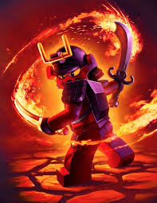
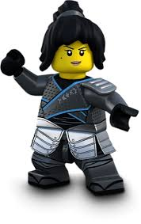

Abilities
- Shooting water from hands (if the plot allows)
- Forming funnel clouds (if the plot allows)
- Spinjitzu
- Airjitzu (Too OP)
- Summoning water dragon (if the plot allows)
- Summoning the Lightning X Water dragon (with Jay)
- Mechanic work
Weaknesses
- Feeling weak
- Pride
True Potential
Nya started out as just Kai's sister. She wasn't known as much else. In season 1, she created the identity of Samarai X, a mechanized samarai that could fly and shoot rockets. Nya remained Samarai X until season 5: possession, where she learns that her mother was the master of water and that she must follow in her footsteps. Nya is held back by not willing to take this new course. She prefers what she is comfortable with. She knows nothing about being the master of water and is scared of failing. She meets her true potential by recognizing this pattern throughout her life and owning her place as the master of water.